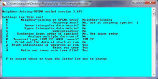
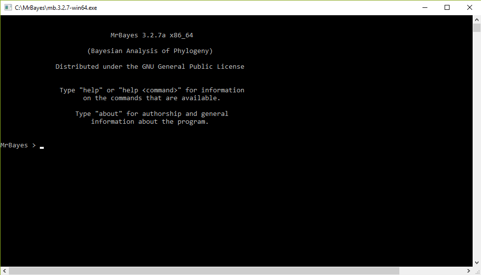

11 Softwares para análises filogenéticas
Desde 1980, uma série de softwares vem sendo desenvolvidos para rodar análises filogenéticas.

Phylip

Hennig86

NONA

Base atualizada com lista de programas por seções.
11.1 MS-DOS
Diversos programas de análises filogenéticas foram desenvolvidos para o ambiente do DOS (Disk Operating System).
O prompt de comando do DOS shell é representado por
C:\>.- A letra C refere-se à unidade de disco;
- Os dois-pontos e a contra-barra indicam o caminho do diretório-raiz da unidade C.
Seleção do driver
c:
Acessa um diretório a partir do diretório atual:
cd [diretório]
Retorna um diretório:
cd..
Retorna ao diretório-raiz da unidade de disco:
cd/
Acessa um diretório:
cd/[diretório]
Exibe os diretórios e arquivos locais:
dir
…, lado a lado:
dir/w
…, pausadamente:
dir/p
…, lado a lado, pausadamente:
dir/w/p
Mostra todos os arquivos com determinada extensão:
dir *.[extensão]
Mostra os argumentos da função dir:
dir/?
11.2 IQ-TREE
O IQ-TREE é um dos programas mais utilizados para condução de análises filogenéticas baseada no método da Máxima verossimilhança.
Veja o Manual
A primeira versão foi lançada em 2011. O IQ-Tree é o sucessor dos softwares IQPNNI (desde 2004) e do TREE-PUZZLE (desde 1995).

11.2.1 Prática
- Vamos testar o IQ-TREE utilizando o exemplo embutido no programa:
Coloque os arquivo com a matriz alinhada no mesmo diretório que o programa IQ-Tree. Isso evita que se tenha de especificar o caminho do arquivo a ser lido (input).
Realize uma análise-teste com o exemplo do próprio programa, o arquivo
example.phy, mas antes abra-o em um editor de texto plano (como o Bloco de Notas do Windows) para verificar seu conteúdo.Em seguida, execute os comandos abaixo:
Lista completa de funções do programa
iqtree -h
Inferir a árvore de máxima verossimilhança utilizando o melhor modelo selecionado pelo ModelFinder
iqtree -s example.phy
Executar apenas a busca pelo melhor modelo utilizando o ModelFinder
iqtree -s example.phy -m MF
Executar diferentes métodos para estimação do suporte dos ramos
iqtree -s example.phy -alrt 10000 -bb 10000 -lbp 10000 -abayes
Arquivo input
iqtree -spp mimosa.nex
Reescrever os arquivos, apagando os dados previamente gerados
iqtree -spp mimosa.nex -redo
Seleção do terminal externo
iqtree -spp mimosa.nex -redo -o Mimosa_invisa_invisa
Métricas de suporte dos ramos
iqtree -spp mimosa.nex -redo -o invisa_invisa -allnni -alrt 10000 -bb 10000 -lbp 10000 -abayes -bnni
Estabelecendo constraints
iqtree -spp mimosa.nex -redo -o invisa_invisa -g mimosa.constr1
Concatenar arquivos
type mimosa0.nex.treefile mimosa1.nex.treefile mimosa2.nex.treefile mimosa3.nex.treefile > mimosa.treels
Executar os testes de topologia
iqtree -spp mimosa.nex -z mimosa.treels -o invisa_invisa -allnni -alrt 10000 -bb 10000 -abayes -lbp 10000 -bsam GENESITE -zb 10000 -au -zw
11.3 SplitsTree6
11.3.1 Prática
O arquivo
.splits.nexgerado peloIQ-TREEpode ser carregado pelo SplitsTree6 (Huson and Bryant, 2005), um programa com interface gráfica com usuário e simples de usar.Diferentemente das árvores filogenéticas, as redes filogenéticas conseguem representar as incongruências e incertezas do conjunto total de árvores obtidas na análise filogenética, e são produzidas a partir de métodos de distância específicos. Trata-se de uma ferramenta exploratória interessante que tem sido utilizada até mesmo fora do campo da biologia comparativa.
11.4 MrBayes
A primeira versão do MrBayes (Huelsenbeck and Ronquist, 2001) foi lançada em 2000. Este talvez seja o mais conhecido programa de análise bayesiana para filogenias.
O MrBayes possui um console próprio onde são inseridas as linhas de comando.

- O ideal é manter o arquivo da matriz de dados a ser analisada no mesmo diretório do MrBayes.
11.4.1 Prática 1
Abra o MrBayes e execute os comandos abaixo:
Sobre o programa:
aboutCitações dos diferentes módulos do programa:
citationsGera um arquivo .txt com a referência completa das funções no diretório Documents:
manualExibe as principais funções do programa:
helpCom a função “help” os diversos parâmetros são exibidos:
Exibe explicação e os parâmetros do modelo de verossimilhança:
help lsetExibe explicação e os parâmetros a prioris do modelo filogenético:
help prsetExibe explicação e os parâmetros da análise MCMC:
help mcmcExibe explicação e os parâmetros da função sump:
help sumpExibe explicação e os parâmetros da função sumt:
help sumtExecute uma análise filogenética utilizando o exemplo trazido pelo próprio MrBayes, o arquivo
primatex.nex:Carrega dados do arquivo NEXUS
execute primates.nexAltera o modelo evolutivo para GTR+G+I (Variação na taxa de substituição entre sítios de nucleotídeos proporção de sítios invariáveis)
lset nst 6 rates=invgammaConferir os parâmetros do modelo
showmodelPara alterar os parâmetros do modelo, use prset, indique o nome do parâmetro, insira o símbolo de igual “=”, e indique o valor
prsetInicia a análise Monte Carlo via cadeias de Markov alterando alguns parâmetros
mcmc ngen=20000 samplefreq=100 printfreq=100 diagnfreq=1000Resume os valores dos parâmetros usando o mesmo burn-in que o diagnóstico no comando “mcmc”
sumpResume as árvores usando o mesmo burn-in que o comando mcmc
sumt
11.4.2 Prática 2: Modelo de substituição
- Para configurar o modelo GTR+G, use:
lset nst=6 rates=gamma
- Para configurar o modelo GTR+G+I, use:
lset nst=6 rates=invgamma
- O modelo de GTR+I+G geralmente se ajusta melhor aos dados.
Fonte: http://treethinkers.org/tutorials/mrbayes
Na versão mais recente do MrBayes (3.2.2) é possível evitar ter que especificar apenas um esquema de tipos de substituição, permitindo que MrBayes se mova por diferentes esquemas como parte de sua amostragem MCMC. Este procedimento é conhecido como salto reversível MCMC (RJ-MCMC).
Para configurar o salto reversível, use o seguinte comando:
lset nst=mixed rates=gamma
- O salto reversível não está configurado atualmente para diferentes modelos de variação de taxa entre sítios.
11.4.3 Prática 3: Gerando o output
Depois de executar uma análise MCMC no MrBayes, certifique-se de que as cadeias de Markov convergiram através do software Tracer.
Exclua as amostras influenciadas pelo ponto de partida de uma análise MCMC através de um processo conhecido como descarte do burn-in.
A remoção do burn-in é feita especificando um valor para o parâmetro
burnindesumpesumt:
sump burnin=1000
sumt burnin=1000
 Os principais resultados são gravados no arquivo
Os principais resultados são gravados no arquivo